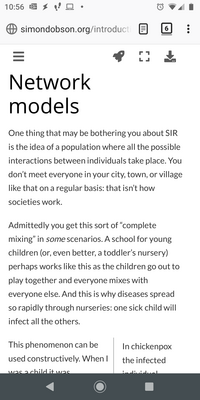
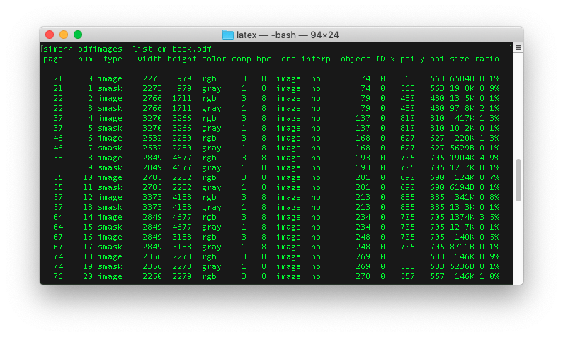

Self-publishing "Epidemic modelling"
I thought I should record the journey I took to self-publishing a science book, in case anyone else decides they want to follow me on it.
When I first decided to write a book on epidemic modelling I didn't really have a clear idea what I intended. Was it supposed to be a tutorial? Popular science? Hardcore technical science? Was it even supposed to be for public consumption at all? And regardless of the answer to that question, how do you write, format, and publish a book when you don't want to put yourself under stress by engaging with a publisher?
After just under three months I now know the answers to these questions. It was a popular science tutorial complete with code. It was intended for public consumption, online and in print. And the technology is accessible and rewarding for the dedicated hacker (although possibly an indescribable frustration to anyone else).
The backstory
Despite a couple of decades in academia, I'd never written a book before. The only book-length document I'd ever completed was my PhD thesis, and back then (1992...) you wrote it, printed it yourself, and took it along to the university print shop to be bound, and delivered it to the library to be filed -- probably there to rest undisturbed. (PhD theses are the ultimate write-only document.)
I did make a start on a book a few years ago. This was conceived as a textbook on complex networks that would contain all the descriptions, maths, and code needed to get started working in the area. There are other introductions, but they're not typically written with computer scientists in mind -- or even those who are interested in building their own simulations -- and so they don't typically contain any code or discussion about the issues involved in simulation. Which is a shame, as they are both fascinating and essential to practical research. The project stumbled on my not being able to find a technology that would support what I had in mind without a lot of extra work.
My recent work has been concerned with understanding the mathematical
properties of networks and stochastic spreading processes. Disease
epidemics are a classic example of this: the disease spreads through a
network of human contacts, infecting susceptible people with some
probability. This involves both analytical mathematics and numerical
simulation, often written in Python and usually require a lot of
processor time. The processes are also complicated enough to be a
testing challenge. I'd therefore written two Python libraries to help
the work along: one that managed the running of computational
experiments involving lots of experimental repetitions across
multi-dimensional parameter spaces
(epyc); and one that provided the
basic simulation framework and canonical processes for studying
epidemic and other processes
(epydemic).
Then covid-19 hit. Lockdown. People who knew that I worked on epidemics spreading in networks started asking me about the pandemic, about government responses, and what did it actually mean that they were "following the science"? -- what sort of science would they be relying on? Well, I needed a project anyway, so I started writing in the style that I'd previously had in mind -- notes, maths, and code -- and hoped the technology had moved on sufficiently.
It had.
Writing technology
After deciding what to write, The next decision a writer needs to make is what they'll be writing in. For civilians that's easy, and they break out the word processor. For computer scientists it's harder. We have a wealth of choices, actually enough to induce a paralysis of indecision. Not all choices are created equal, however, and in particular, some choices work better together than others. Pick a starting point, I reasoned, and many of the secondary choices will fall into place automatically.
In my case the starting point was straightforward. Since I wanted a lot of code, and since it'd be "live" code integral to the project and needing to be run while I was writing, I needed some way of writing both literary and executable content in the same document structure. Jupyter notebooks were the obvious choice.
A notebook sits in a browser and presents a "cell" structure to the writer. A cell can contain text, which can also include maths. The notebook lets the writer edit the cell and then render it, at which point any LaTeX-style maths is rendered as ... well, maths. Text cells actually contain "markdown" text, which is familiar to anyone who's ever written Python documentation. Markdown structures plain text in such a way that it can be rendered properly into, for example, HTML or PDF. Markdpwn isn't exactly standard, but there are fairly standard dialects that are enough to be getting started with. Markdown can also include maths formatted using LaTeX-style formulae, which Jupyter then automatically renders using MathJax.
A cell can also contain code. Jupyter supports a huge range of languages, although each notebook has to commit to exactly one: Python, in my case. These cells can be executed, and the results come back into the notebook. This is especially great if the results are a diagram, because that gets rendered into the notebook too. You simply instruct the notebook to generate diagrams inline, typically in the first eceutable cell where you import any packages:
import numpy
import networkx
import epyc
import epydemic
import pandas
import mpmath
import matplotlib
%matplotlib inline
%config InlineBackend.figure_format = 'svg'
import matplotlib.pyplot as plt
The use of SVG makes for scalable plots, but I wasn't keen on the
standard notebook presentation, so I used seaborn to get a nicer
layout and colour scheme adjusted for notebook use, and played with
the font sizing until I liked it:
import seaborn
matplotlib.style.use('seaborn')
seaborn.set_context("notebook", font_scale=1.75)
The net result is a single document that's partly text and partly executable. It's a very interactive way to write code. It encourages writing explanations of executable content at a level that's far more detailed (and for a different purpose) than code comments. Anyone old enough to remember literate programming will get the idea immediately, and Jupyter is to my mind the logical extension of these ideas into practical computational (rather than just computer) science.

Having committed to Jupyter largely from necessity, it then made sense to follow this choice and write everything in markdown.
The last piece of writing technology for the paranoid hacker isn't about writing, it's about backups. Putting everything on Github protects the work from accidental loss and provides all the other advantages of version control. If you've used this for writing software, you won't want to abandon it for writing. Fortunately Jupyter and markdown generally are simply text files, which mean they interact well with modern version control systems.
Getting on the web (at all)
In a sense Jupyter is intrinsically on the web since all editing happens in a browser, but that's not suitable for public, read-only access. But there are plenty of ways to make a notebook visible, all with their own advantages and disadvantages:
- You can run your own notebook server. Needs an open internet connection and a cavalier attitude towards system security.
- Any notebook hosted on Github will be rendered when visited. Quick and simple. Nasty user experience.
- Any notebook with a URL can be passed to nbviewer to be rendered. Hard to interact across multiple notebooks.
- Binder will take a repo of notebooks and spin them up in a container. Very flexible and executable. Not a reader-focused experience.
Each of these tools meets a specific use case -- and does so very well. Unfortunately they weren't my use case: an online book, accessible to the non-technical reader and offering a good reading experience.
Getting onto the web (as a book)
And then I discovered Jupyter Book.
This was exactly what I had in mind. It allows a collection of notebooks, markdown, and files of other types to be linked together into a book structure, applying the necessary web styling, links, and other boilerplate around the writing. It renders notebooks seamlessly so they read like any other document. You can mark cells to be left un-rendered, or collapse the input or output of a cell behind a "click to show" button. Digging a bit deeper, you can even include Google Analytics tracker code to monitor visits. All good.
Actually, this is just the most basic use case. Jupyter Book is essentially a front-end to the Sphinx document system that's used to generate Python documentation for use on Read the Docs and similar sites, familiar to anyone who maintains a Python library. But Sphinx itself has more to offer: it can take the same collection of markdown, ReStructured Text, and the like and generate HTML, or LaTeX, or TexInfo, or basically any technical format in common use. It does code syntax colour highlighting. It handles maths. It has extensions that understand BibTeX for generating reference lists. It's extensible to introduce extra kinds of markup. And so on, warming the deepest recesses of the hacker's heart.
To use Jupyter Book you define two files, _config.yml describing the
overall configuration and _toc.yml laying-out the table of
contents. From these Jupyter Book generates a static web site.
There's a particular directory structure (which the tool populates when it's initialised) required. I'm never a fan of these things, as they can lock the content too tightly into one specific tool, so I wrote as makefile to keep the content separate and copy the source files around as required to perform the build.
Sitting on Sphinx means there's good theming support. Jupyter Book
comes with a book style that's based on the work of Edward
Tufte, whose work has a
distinctive style of large margins for frequent marginal notes. The
idea is that footnotes become sidenotes and citations are placed next
to the text, to keep all relevant information within the visual
field. The theme defines a .. margin:: directive for use in markdown
to generate the marginal notes, which are then rendered properly on
the web pages. There are also {cite} and {index} roles that
include citations and index terms respectively.
At this point I realised two things:
- I could write my book using the technologies I wanted and get a reader-friendly version on the web with next to no effort.
- I could probably get a version for proper on-demand printing too, and make it available as a print book just as easily.
The first realisation turned out to be true; the second not exactly because of the alpha quality of Jupyter Book, but it was possible with care (and without a change of tooling).
At this point I discovered that my choice of Github as an aid to writing was unexpectedly also an aid to publishing. This is because of Github Pages, a service that lets any public Github repo generate a web site for itself that's also hosted by Github. It's primarily intended for providing home pages for open-source development projects, but works equally well for open-source books.
The mechanism is easy. You designate a branch of the repo to hold the
web site as a set of pages -- a static site, just HTML and CSS. You
then commit the pages you want to this branch, and they get
served. Keeping the branches separate means you can commit to the
master branch freely, and do a specific git commit on the page
branch to deploy the site. The mechanics of this might get tricky, but
(as they say) there's a plug-in for that, in the form of the
ghp-import Python
package. Jupyter Book generates the HTML static site, and ghp-import
takes care of committing to the correct branch. Couldn't be
easier. This also got added to my makefile.
And so the project went on the web in reader-friendly style, without very much in the way of fuss.

The theme turns out to be responsive, too, so it even looks pretty readable on a phone.

(The margins disappear, and you can see at the bottom of the screen that the marginal notes float into place.)
Printing
I was excited to read that Jupyter Book supports the conversion of documents to PDF via LaTeX, the document preparation of choice for many scientists. This turns out not to quite be true -- at least, not yet. While Jupyter Book will generate LaTeX output, there are limitations at the moment -- understandably since it's a new project still in the throes of defining itself. I didn't want to wait. So I got a lot more intimate with Sphinx.
Actually the process is pretty straightforward. Sphinx is driven by a
conf.py file, the
format
of which is very well-described. It won't use Jupyter Book's
_toc.yml, which is actually a good thing as the layout of a print
book will typically be different to that of an online book, so
there'll typically be slightly different files in a slightly
different order. I defined a master document for this, plus some
auxiliary bits and pieces.
There were a couple of problems. Firstly, LaTeX doesn't really like SVG figures. Jupyter has several options, so I changed the notebook header cell to select PNG instead.
```{code import matplotlib %matplotlib inline %config InlineBackend.figure_format = 'png'
The other issue concerned getting references and citations to
work. The [Sphinx plug-in for
this](https://sphinxcontrib-bibtex.readthedocs.io/en/latest/) works
perfectly for online use but not so well for print usage, especially
with a more complicated document class (see below). The citation tags
that it generates aren't quite the ones in the underlying BibTeX
file. They're extended with the name of the file that imports the
bibliography, which is a feature to allow multiple bibliographies to
co-exist. That's non-standard in the LaTeX world, so I piped the
resulting LaTeX file through `sed` to remove the extras.
Finally, Sphinx generates inline `\bibitem` calls, which again isn't
quite standard for LaTeX and (it turns out) confuses some of the more
complex LaTeX classes. I solved this by letting Sphinx ingest the
bibfile but not using the Sphinx `.. bibliography::` directive to lay
it out in the document, and instead adding a separate file to include
the usual LaTeX `\bibliographystyle` and `\bibliography`
commands. This meant that the usual LaTeX/BibTeX square dance would
lay the references out correctly.
A similar problem affects index generation. This time it arises
because Sphinx isn't careful enough about injecting spaces into the
generated LaTeX `\index` commands, which causes duplicate index
entries if you have the same term indexed to different pages. Another
piece of `sed` fixed this too, and adding `\printindex` brought the
index into the document in the appropriate place. (Strangely enough
Sphinx emits `\makeindex` at the start of the document but doesn't
emit `\printindex` at the end.
## Better print styling
Sphinx is at bottom a tool for code documentation, and its in-built
LaTeX themes are understandably restricted. Having followed Tufte's
style for the online version I wanted to do the same for a print copy
-- not least because I'm now a convert to this style.
You can set the document class for the final document and instruct
Sphinx to include a "prelude" of your choice. There are [lots of book
templates to choose from](http://www.latextemplates.com/), and
fortunately there's a [Tufte book
class](https://tufte-latex.github.io/tufte-latex/) that's included in
a lot of LaTeX distributions as standard. I did a small amount of
customisation in a `style.tex` preamble file, mainly to get a
copyright page and place marginal notes into the margin by translating
the Sphinx-generated command to the command provided by the Tufte
class. You can also set document class options like the paper size
(`b5paper` in my case, fairly standard for scientific books) and
whether you're looking for a PDF suited for printing (with asymmetric
margins to allow for the spine) of for viewing online (symmetric
margins). The result was very appealing.

Those wide margins are also great for figures that benefit from the
extra width.

I got this directly from the markdown by using the `.. raw:: latex`
directive to include specific markup into the LaTeX version that's
ignored in the HTML or other renderings.
This whole process takes markdown and notebooks to LaTeX (and then to
PDF, seamlessly. I did move some notes around to make them break better
on the pages, and re-arranged some code fragments to avoid over-long lines.
## Getting into print
Most people writing a book, at least when they get this stage, have a
publisher in mind or even a contract. A publisher wants to convince
themselves that a book will sell enough copies to make them money, and
will put in the effort in marketing and publicity to make this happen.
But self-publishing has become a lot more possible these days, with
print-on-demand services willing to take on essentially *any* book
since there's no inventory to be held. Only as many books are printed
as are bought, but the individual cost may be higher to account for the
lack of economies of scale. Since I harboured no delusions as to
having a best-seller on my hands -- not least because the whole
project sits publicly on GitHub and can be read freely online --
self-publishing and print-on-demand were attractive.
The biggest print-on-demand shop is also the biggest shop of any kind:
Amazon. [Kindle Direct Publishing](https://kdp.amazon.com/en_US)
handles both e-books and print books. An account is easy to set up and
gives access to a range of tools. A book needs an ISBN number -- a
different one for each format and edition, in fact -- and Amazon will
allocate one for you.
All this "free" help comes at a cost, though. Using an Amazon ISBN, or
a cover with Amazon clip art, ties you strictly to Amazon for
distribution.
Searching online turned up
[IngramSpark](https://www.ingramspark.com/), who are a print-on-demand
and e-book distributor. They offer a broader service than Amazon, for
example advertising to bookshops and providing order fulfilment.
The prices involved are pretty similar. Amazon have a single price
point for their sites, taking into account printing and their cut. I'd
already decided to aim for the lowest price point for this book (not
least because it's available for free online) which
worked out at 16.99 for a royalty of 1.12 per sale. IngramSpark
allow different prices for the UK, US, Euro, Australian, and world
markets, and I chose the same price in pounds. (Their royalty is
1.23.)
As far as ISBN's are concerned, there are national agencies that
allocate them -- at a price. But the renaissance in self-publishing
has meant that there are also networks of people working to help
aspiring authors. In the UK I discovered the [Independent Publishing
Network](https://bookisbn.org.uk/) who provide such services,
dealing with generating ISBNs and entering the book details into the
relevant catalogues. They also provide -- and here's another little
detail it's easy to forget -- a barcode for the back of your (print)
book to help acquisition, sales, and stock management by bookshops.
# Trim and cover design
On-demand print services are quite demanding in terms of their
requirements on PDF files for cover and content. The exact
requirements depend on the size (or "trim") you choose for the book. I
went with 7x10", which is ever so slightly larger than B5. The
services will provide template covers once they know the trim size and
number of pages (for the spine width).
At this point things got more in need of creativity. I read a lot of
blog posts and advertorials on the subject of cover design (many of
which warned that it was strictly a job for professionals), and they
all recommended mining the genre in which you're writing, so I looked
on my bookshelf.

There's a lot of commonality there, with an obviously network-y
("starfish") central image. These are very visually appealing, of
course, but unfortunately they're almost entirely devoid of
information. When we're actually doing research we almost *never* draw
these sorts of diagrams (other than for their fluff value):
traditional graph-plots and heatmaps are much more useful. On the
other hand there's a reason why people go for eye-catching front
covers.... This left me in a bit of a quandary.
After several false starts I realised that one of the graphs in the
book was actually quite graphically strong and could be used almost as
a logo once the axes labels and title were removed. And I also had a
"starfish" network diagram, which (unusually) I'd drawn for good
scientific reasons. An hour with Photoshop and some back-cover
blurb-writing resulted in a design.

There's absolutely no doubt a professional would do better, but for a
science book I think there's less reason to be precious about these
things.
## Print niggles
So far so good, now to upload the documents. There's a lot of scope
for error in measurements and the like. Fortunately the
print-on-demand services also run an automated workflow, which means
that the files are checked at submission.
I encountered two problems. Firstly, any figures are embedded into the
PDF with a given resolution and colour profile. For printing they
really need to be 300dpi at least, and the upload flagged them as not
meeting this standard. It's of course not obvious from a previewer
where the problem is, but executing `pdfimages -list` on the PDF shows
the images and their resolution. Jupyter uses a lower resolution by
default, so I added an appropriate line to the cell at the head of
each chapter:
```{code}
import matplotlib
%matplotlib inline
%config InlineBackend.figure_format = 'png'
matplotlib.rcParams['figure.dpi'] = 300
This then triggered another warning, this time that the images were
over 300dpi! And that was true, because of course you may generate
an image at a larger size than it appears on the page, and pdflatex
doesn't automatically downsample. pdfimages -list again shows the
problem.

I explored several ways around the issue, including re-encoding the
PDF using ghostscript -- which re-sampled the images but introduced
ICC colour profiles in the process, which trigger yet another
warning when the PDF is uploaded. In the end I let the printer
downsample from the too-large images and checked the print proof
carefully for any anomalies -- and there weren't any. Phew!
No e-book (yet)
Jupyter Book doesn't yet generate EPub, although again Sphinx does. So I tried the same trick of driving Sphinx directly.
LaTeX-style maths isn't readable in e-books, and you can't use
MathJax despite everything being in HTML
as e-readers don't typically support Javascript. Again, there's a
plug-in for that, in the form of sphinx.ext.imgmath. Include that
and all maths is rendered as images using LaTeX. (You need another
program, dvipng, to do the conversion.)
However, try as I might, I couldn't get Sphinx to render the images in
Jupyter notebook cells. This is very strange, since the Sphinx HTML
renderer handles them just fine. I still haven't sorted this out,
despite an extensive foray into how Sphinx (and Python docutils, and
the MyST-NB notebook parser) work: I suspect there's a single
configuration incantation needed.
Costs
A self-publisher takes on all the costs that a publisher would normally absorb. In my case these have been roughly:
- 40 for an ISBN number, barcode, and Nielsen registration
- 45 to upload a manuscript to IngramSpark
- 65 to be included in their advertising material and catalogue
- 60 for library deposits (see below)
Call it 200 -- or, to put it another way, needing about 130 royalty payments to break even. To have a hope of that happening will require some marketing, which won't be free.
One of the costs above need explaining. Any book published in the UK must by law have a copy deposited (at publisher's expense) with the British Library -- and on request with the five other deposit libraries around the UK. (This includes e-books.) Fortunately you can get author copies from IngramSpark at just the print cost.
This shines an interesting light on the economics of self-publishing. I've taken several steps to minimise my royalties, not least by making the project open source, which then in turn pretty much mandated a minimum price point for the print book. A traditional, closed-source project could freely try to charge more. And obviously the fixed costs of e-books are essentially minimal compared to print (although you still need to buy an ISBN).
Psychology
Not having a publisher is a double-edged sword. On the one hand, it frees you to write (or not) as you see fit; on the other, it's hard to actually bring things to an end when there's always something more you could add. For this book the scope was quite clearly delineated form the start, and the end to the content was equally easy to decide.
I never found it hard to do writing, although I did sometimes struggle with exactly what to write -- or rather, how to put something. I'm much more used to writing for an academic audience, but actually the effort of simplifying and re-writing to make the text simpler, more easily grasped, and (hopefully) more memorable and better crafted are things I'll try to take forward into all my writing. There's no reason for scientific prose to be hard to digest, and in fact the easier concepts and explained the more likely they are to be picked up and used (and cited!).
But I still found it hard to let go! The hardest thing was pushing the button to "approve" the printed proof ahead of distribution. I must have uploaded 20 versions, each with subtle differences in layout and another corrected typo. In the end I realised I was just trying to perfect things in order not to commit the book to the public, and just forced myself to go through with it. The relief was palpable.
Conclusions
I'm very happy with the way things turned out both online and in print. Jupyter Book is an excellent project and does a fantastic job of rendering online books. It's not working yet for print or e-books, but that's surely only a matter of time given the Sphinx does (almost) everything needed.
Of course what I've described is something of a hacker toolchain: you need a certain attitude to write a lot of markdown with any degree of comfort. But then again this is technical writing, and if you already have comfort with these sorts of tools, then it's immensely reassuring to know that you can transfer those skills from a coding to a writing project. And skills like version control are equally valuable in both domains.
It's also a slightly flaky toolchain, especially for print media. I needed to fix up citations and index terms using shell scripts, which is clearly undesirable. But these are only small (if fiddly) issues, and ones that could easily be retrofitted into the underlying codebases. I'll be looking to this in the near future, other commitments permitting.
Is there an easier way? If you didn't need executable content then writing straight into LaTeX would be an option, and then going from there to HTML. Personally I think I'd stick with markdown and Jupyter Book even if I didn't have notebooks: start with portable sources and then refine to presentations using the best tools for the particular media.
One final point needs making strongly. With the single exceptions of Photoshop for assembling the cover, Amazon for creating the cover template, and some help with ISBNs and barcodes, all the tools I used are open source. (And you could easily replace the former with Gimp.) It's amazing that the powers of open source have moved from the coding domain and into the domain of book publishing, and have wrought the same changes.
Resources
You can read the book for free online here, or buy a print copy from Amazon.
All the files mentioned in the text are available from the project's Github repo. Some of the specific files referred to in the text are:
-
Makefile-- looks complicated, but all it really does is move files around before building, plus running a couple ofsedscripts for patching. - The
tufte-bookclass file -
latex/conf.py-- LaTeX driver for Sphinx, importing the necessary extensions -
latex/style.tex-- the LaTeX preamble, re-defining thesphinxShadowBoxenvironment to used the Tufte class'\marginnotecommand, defining the\backoftitlepagecommand to put in the copyright and imprint information, and the\forprintcommand to set things up generating a print PDF by disabling hyperlinks